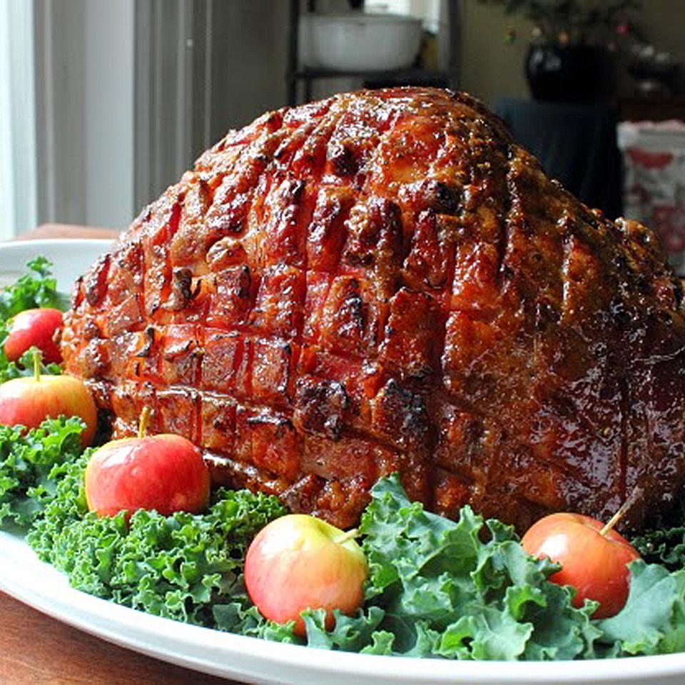

Christmas Bubndt Cake

Description
A great holiday ham glaze needs to have three things: wonderful flavor,
gorgeous, shiny appearance, and a crispy, crackling crust you can hear
across the room. I'm happy to report this easy-to-make glaze has all those
things in abundance.
Ingredients
- ¾ cup water, or as needed
- 2 whole star anise
- 12 whole cloves, or more to taste
- 1 (7 pound) country-style ham
- 1 cup firmly packed light brown sugar
- ¼ cup honey
- 2 tablespoons Dijon mustard
- 2 tablespoons rice vinegar
- 1 1/2teaspoons freshly ground black pepper
- ½ teaspoon Worcestershire sauce
- 1 pinch cayenne pepper
Steps
- Preheat oven to 325 degrees F (165 degrees C).
- Pour water, star anise, and cloves into the bottom of a roasting pan.
Place a roasting rack into the pan over the water, anise, and cloves;
place ham on rack. Cut 1/4-inch deep slashes 1/2-inch apart lengthwise
and crosswise across the top of the entire ham.
- Bake ham in the preheated oven for 20 minutes. Whisk brown sugar, honey,
mustard, vinegar, black pepper, Worcestershire sauce, and cayenne pepper
together in a bowl until glaze has a thick, smooth consistency.
- Brush glaze all over ham. Continue baking ham, brushing glaze on every 20
minutes, until glaze is deep golden and ham is heated through, about 2
hours 10 minutes. An instant-read thermometer inserted into the center
should read 130 degrees F (54 degrees C).
- Use a kitchen torch to heat the glaze on the ham until it is crispy
and caramelized, 2 to 5 minutes.